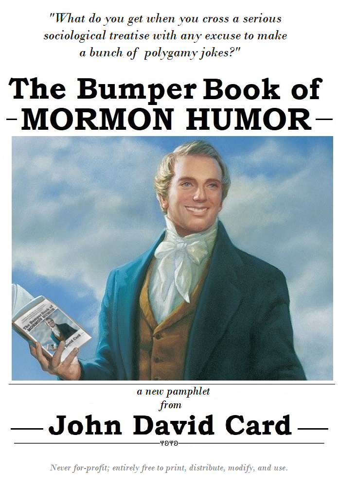
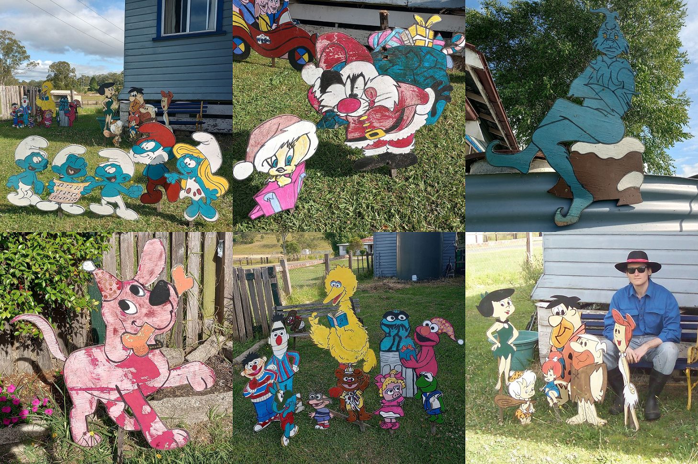
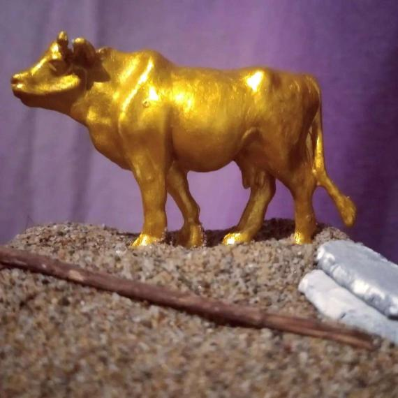
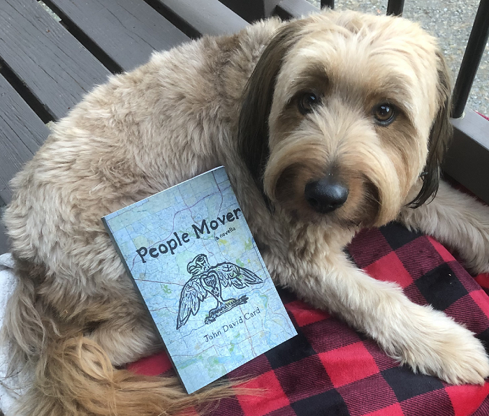

While I keep myself busy with work, education, and community organising, in my fleeting moments of free time, my preferred hobby is working on all sorts of little art projects. I like to experiment with all sorts of different mediums and methods and themes, and even though I've never had any formal training in high-level practical technique or anything similar, I don't think that's a problem in the slightest. The way I see any creative project isn't as an attempt to necessarily emulate anyone else's work or output, but rather, to simply explore how concepts can be realised in different forms, see what new ideas derive themselves from the experience of doing prior projects, and have a bit of fun with the basic supplies I've got lying around already.
The idea that goes into any given piece is, I would argue, the most important part - not just how the final product turns out. A concept that you want to explore in different forms might warrant half a dozen different attempts before you end up with something that you think looks "good", or that you're satisfied with. However, it's the process of thinking about and refining the idea and how you approach it that matters. Frequently, I'll play around with a concept just to make a simpler or smaller version of something I'd like to attempt in the future, or just to get an idea of how practical a concept would be to do full-size.
I don't keep most of the art I make. A lot of the time I'll reclaim what I can out of a project once it's done - painting over old canvases and recycling polymer clay, for example, although I'll usually hang onto any project I'd like to revisit in the future. In addition, quite a few things I've made I've ended up happily giving away, although I refuse on principle to sell anything.
I feel that playing around in all these different mediums is just inherently beneficial on some level, and it really allows oneself to consciously think about approaching ideas from multiple different angles without feeling any pressure to treat doing little arts and crafts projects as anything that needs to be taken too seriously. Plus, learning how to create all different sorts of things is, above all else, really fun and I love trying new things and finding out about new concepts and how they can be applied. In every artistic method of expression - be it, drawing, painting, writing, model-making, sculpting, sewing, creating music, or digital technologies like the HTML writing that went into making this very website, or anything else - there's an immense amount of joy to be had with even just attempting to learn the basics and earnestly giving creating something a go.
Since I love discussing how and why I think particular ideas would work and what inspires me, to that end, I'd like to use this page as a regularly-updating repository of all my little hobby projects and ideas. Below are a number collapsible banners, which, if you click on, will explain the nature of each piece and the though process that went into creating it. Please, feel completely free to appropriate, adapt, and take inspiration from anything you see here - and if you like what you see, check this page regularly for new stuff.
Autumnals was a satirical, encyclopedic-style, sci-fi story I put together around mid-2022 based on an idea I'd been holding onto for a while prior. In short, the story began with the premise that any two warring groups will put aside their conflict to fight a greater, external, foe - and Autumnals uses that idea and runs with it to unfold a setting where increasingly distant alien entities are dragged one-by-one into a costly intergalactic war ever-increasing in scope.
After initially writing it up, I decided I'd rather hang onto the manuscript for now since I wasn't in a position to do much else with it, and I thought that the premise could be better served anyway through a different format - like eventually adapting Autumnals into a short film. I still wanted to get the premise out there in one form or another, however - so, in October 2022 I threw together a very PowerPoint presentation-esque YouTube video with my limited editing skills explaining the thought process which inspired Autumnals, the story's concept, and gave my blessing to anyone else who like to use the premise.
I'm still immensely proud of the concept I came up with, but I'm not sure if I'd have the nous to adapt it in a fittingly visual format myself - so I consider it my 'open source' pitch, since I'd be more than happy to let anyone freely have a stab at doing something with it rather than just letting it gather dust in my possession.
In early 2021, I was thinking about ways to potentially incorporate some of the historical and sociological research work I'd done by then into a creative project. My research around that time had been centered around the use of in-jokes and reference humour among contemporary cultural minorities, and my prior experience had been with Nineteenth and Twentieth Century American folk religion - and I got the idea to try and use some of what I'd learned in those areas as the basis for a short zine or pamphlet.
The biggest hurdle I was going to face would be the task of taking these mostly dry academic findings and turning them into something engaging or something that could at least be presented in a sort of artistic juxtaposition. The approach I settled on was attempting to do a fourteen-page fold-out booklet that would have one section dedicated to semi-formally explaining the cultural in-joke thesis, and then the rest of the pages could be actual examples of the sort of humour I was referencing.
Combining my prior work in American religion and contemporary cultural minorities, I ended up focusing on the jokes which surround the modern Latter-day Saint movement, and ended up calling this zine 'The Bumper Book of Mormon Humor' (sic, note the American spelling).
I wrote up all the content for this booklet and photoshopped a cover together over a weekend, and just compiled it into one package digitally. If this was a more serious project for me, or I had a little more free time on my hand when I was doing it, I would have preferred to experiment with layout and formatting options a bit more. As it is, The Bumper Book of Mormon Humor ended up being a disparate bunch of LDS-themed jokes preceding a five-page essay about stereotypes within the Mormon diaspora. Ideally, I would have liked to try something where I could worked the former into the latter more evenly - but a creative experiment doesn't always have to come out exactly how you would have wanted it to for it to have been worthwhile to try.
At the time, I printed off a few copies to show my art / literary-nerd social circle, and circulated the the digital version around the small following I'd had online since I released my novella, People Mover, a year prior - but I never did anything further with the project. As it stands, TBBoMH feels more a bunch of decent creative elements that haven't (yet?) been assembled into their final form. A lot of the research work I do these days is still in the same general area, and I still think the idea of combining a sociological thesis and a jokebook somehow is a novel little creative idea too - but I don't have any plans to reattempt it myself anytime soon.
Still, if you'd like to view or download a .pdf copy of The Bumper Book of Mormon Humor, click here.

The very website itself is my most recent project at time of writing, naturally. I've wanted to teach myself how to put together a website for quite a long time, since digital stuff isn't something I've had any experience in prior and I'm always keen to learn new skills - plus, it happily comes with the added benefit of providing me with a place to showcase the rest of the stuff I put together and the ideas I have.
I see a lot of people online bemoan the shift over the past two decades or so away from a culture of diverse independent websites towards the gradual monopolisation of the internet under increasingly few banners - and I definitely agree with that sentiment, but you rarely see anyone do anything about it. Most people who complain about how things are getting worse prove that their opinions don't matter by just using whatever inferior services are put in front of them anyway.
I, for one, would also prefer to see more "handmade" personal websites, and people enjoying themselves and picking up a new set of skills in building and maintaining them too rather than just resign themselves to using one of the handful of corporatised websites that now make up the majority of the internet's traffic. To that end, I made setting up a website for myself and my hobbies a project and pursued it. I just wanted an online space of my own to serve as a repository of all the things I work on, that I can update regularly as time permits.
I've seriously enjoyed learning the process behind formatting all the text and changing colours and layouts and adding pictures and so on just by trial-and-erroring my way through putting together a few Notepad HTML files. I really appreciate a system like this where implementing any sort of creative feature is possible just so long as you can think of a way to do it with the toolset you're given. What I've created looks fairly simple and a bit dated - but, importantly, it looks exactly like what I want it to look like, and I did it all myself. I like the seriffed-text maroon-on-cornsilk colour scheme, and frankly, think that it's better on the eyes than a lot of slick modern sites.
I'm going to keep using my website as an ever-growing portfolio of all my other projects, big and small, and as something to keep working on in its own right. If there's one thing I've learnt from the process so far it's that it's actually a lot easier than you might think to do, even when you start with zero prior knowledge, an I would have to encourage anyone who wants to do so to earnestly give it a shot.
Growing up, my family had a unique little Christmastime tradition where we would display a whole little village panorama of hand-made wooden family-friendly character cutouts for the rest of town to freely come and look at on the property as a quaint holiday display.
Every December I go home for the holidays and I'm glad to say we still keep it going. Most of the cutouts are almost as old as I am, but especially the last few years when I've gone back home for the holidays, we've been trying pretty hard to restore and retouch them all as best we can.
We haven't done the whole display as big as we used to do since around the time I was in highschool, but it's really been great seeing a fair few of them still get brought out every Christmas. It might be a little bit corny, but fun little family traditions are what make the holidays all the more special.

The Christian Bible contains many of the most recognisable stories in all of literature. Which isn't surprising given how inseparable Christianity has been from Western Civlisation for more than a thousand years and how both the Old and New Testaments' motifs and symbols have been adapted and invoked in all manner of other writings ever since.
Inarguably recognisble as many of these Biblical stories are, however, it is also very true the the average person (even, the average churchgoing person) has most likely picked up a fair few misconceptions about certain Biblical episodes. Either as a result of conflating the texts themselves with the pop-culture version of them that exists in the zeitgeist (ie. the Forbidden Fruit necessarily being an apple, Noah's ark taking just one pair of every species), or just a lack of familiarity with unintuitive or unfamiliar terms (ie. 'Immaculate conception', 'Prodigal son').
The fact that most people make common mistakes like these isn't really important, and it rarely ever comes up except among diehard Bibliology nerds. But, it got me thinking recently about how much the common, modern, understanding of plenty of Biblical stories might vary from what's actually on the page - and I wondered if there might be an interesting way to compare and contrast the more commonly-recognised version of these stories with a version based on a strict reading of the text.
Furthermore, I wondered if their might be room in this sort of comparative study for a third version of any given scene - one in which I deviate in a wholly original way as much as possible from both the 'zeitgeist' and the 'literalist' interpretation, while still remaining at least nominally within the bounds of what supported by a liberal reading of Biblical texts. This process is called "exegesis" - it's essentially the practical interpretation of a text, especially religious ones like the Bible, the Quran, or the Tanakh.
I had a bit of free time on my hands, so I decided to jump into exploring the concept through mocking-up a few miniature models first with basic supplies I had lying around - since I think that apporaching this sort of comparitive study in a very visual way makes much more of an impression to an observer than just a dry write-up.
Below is one of the first basic conceptual designs I threw together quickly to help illustrate my point:
This is just two simple ways to portray The Ark of the Covenant and the Stone Tablets according to how they're described in the Book of Exodus.
The version on the left is what most people would be familiar with - the Ark as large golden box with figures on top and two horizontal carrying handles and the Tablets as two large, grey, gravestone-like slabs with rounded tops. They're both designs that have entered the modern imagination primarily through movies like Cecil B. DeMille's 1956 epic The Ten Commandments, or more recently, Raiders of the Lost Ark.
The version on the right here is much more in line with how Biblical historians, many reverent Jews, and plenty of pre-modern artists think of the Ark and the Tablets. The box itself is much more modestly coloured and covered by a linen sheet and the Tablets are more akin to actual ancient writing tablets in size and shape and, in line with rabbinic tradition, are sapphire blue.
The Ark of the Covenant and the Stone Tablets are arguably the most recognisable objects in the Bible, and, some of the most thoroughly described in it too, but that doesn't mean there still isn't a large amount of room left for their appearances' interpretation. Nothing about either of the two design shown above is wrong, per se, but they go to show how wildly different two designs derived from the exact same description can be. The length, breadth, and width of the Ark of the Covenant's body is notably described for example (2½ x 1½ x 1½ cubits, respectively), but that measurement doesn't include the gilded exterior trim decoration or the "Mercy Seat" plate which rests on top of it.
What exactly that gilded exterior would look like in practice is also open to discussion and interpretation. 'Gilded' or 'gilt' doesn't necessarily mean 'completely covered in gold' like how the Ark in Indiana Jones film was designed, just at least that the edges and corners of the Ark's body were trimmed with gold leaf or similar. The relevant source texts here also don't provide much in the way of a definitive description of the Cherubim decorations on top of the Ark. They're often depicted in pop-culture as upright figurines with arms or wings outstretched, but they could just as easily, and justifiably, be interpreted as painted or embossed motifs that lie almost flat on the Ark's lid.
Artists throughout the past two-thousand years have played around with plenty of different designs for the Ark which often vary significantly from the modern conception. More than once, illustrations on Medieval manuscripts portrayed the Ark of the Covenant more like a transparent reliquary than as an opaque chest. Many Renaissance painters did the Ark in one form or another - usually intentionally omitting the cloth covering so as to show it in its full glory - and while their works often invoked the 'solid gold rectangle' approach, several of them also included original interpretative designs like large and ornately bejeweled, domed, 'Mercy Seat' lids or chose to make the Cherubim figures on top human-sized. One particularly striking and unique design you can find pictures of online elsewhere is the full-sized replica Ark installed in the George Washington Freemasonry Memorial in Alexandria, Virginia - its design incorporates a golden chest sitting suspended within a red and green timber lattice topped by two large, kneeling, solid gold angels.
The Stone Tablets' design is left even more canonically ambiguous. Their shape is left largely undescribed by Exodus itself, although early Jewish tradition largely held the assumption that they would look somewhat comparable with ancient writing slates. Rabbinic commentary on the Talmud made since affirms that the Tablets were deep-blue and made from sapphire or lapis lazuli.
By the Middle Ages, the Stone Tablets are being included in plenty of high church art, usually, here they were large stone slabs - sometimes rectangular, sometimes with rounded-off tops, and occasionally jagged and uneven like natural stones. While they've been portrayed in a pretty large number of ways - it's worth noting that the traditional Jewish description of the Tablets' blue colouration very rarely carries over into Christian depictions of them though.
It's not that any particular depiction of the Ark or the Tablets is inherently any better than the others, but I do want to emphasise the significant differences in their stylistic interpretation across communities - and I think that naturally, the best way to do that would be something like a gallery showing of full-sized replicas of all the different versions of these items alongside commentary on when and where each depiction originated. That's obviously something that would be outside of my capacity and resources to do currently, but it's an idea I'll happily keep in my back pocket for the time being.
Furthermore, looking at all the different ways Biblical artefacts like these have already been portrayed got me thinking about how else I might approach the concept from an original angle and how to work around canonical 'limitations'. For example, The Ark of the Covenant's basic size and shape is fairly specifically defined, but I still think there might be room to interpret particular elements of its design uniquely - like if the interior chest was capable of telescoping in and out of the Ark's body or if the carrying staves on the side ran vertical rather than horizontal and the Ark was held aloft rather than carried along.
The Tablets have even more potential for creative interpretation since very little about their physical appearance is explicitly described. There's room to play around with their size, shape, colour and the layout of the Commandments on them. I'd like to see versions of them which go for an inscribed tile-like appearance rather than just natural rock look, or playing around with their size - there's nothing in the literature that says the two Tablets couldn't fit within the palm of your hand, for instance. I think it might also be thinking about how the text of the Commandments itself could be implemented creatively - it could be drilled entirely through the stone so as to allowed the words to appear illuminated when light hits the Tablets from behind, or one high-tech approach that's at least nominally possible would be using 3D laser etching in some capacity to suspend the text inside of a (perhaps blue-tinted) crystal slab.
There's a long list of items in the Old and New Testaments that invite similar contemplation - the Hoshen, the Holy Grail, all the treasures in Solomon's Temple and the Holy of Holies. Although, it's definitely all theoretical and conceptual at the moment, but this idea of an exegetical physical-visual study of Biblical artefacts is something I'd absolutely love to do on a much grander scale if I ever had the time, resources, and a place to do it.
For the time being, I've settled for making a tiny version of Aaron's Golden Calf out of air-drying clay and a lick of acrylic paint to sit on my scriptural bookshelf.

Independent Australia is a woefully underrated little indie journal of current Australian affairs and opinion pieces. While it's not just strictly an overt progressive political project, it does run a lot of left-leaning editorials - and happily, the people over at IA are always glad to take submissions.
Politically active and opinionated as I am, I'm always jotting down my thoughts on the events of the day or looking to tell the stories I see happen around me which go ignored by the mainstream press. A lot of my stuff eventually finds its way into either personal projects of mine, or other progressive publications I contribute to - but if it doesn't fit elsewhere, as of late, Independent Australia has been my go-to place for publishing the miscellaneous political pieces I seem to write out of habit.
Through March 2021, I reread all of H.P. Lovecraft for the first time in a long while. And it re-affirmed to me that his best work is 'The Whisperer in Darkness'. The basic plot of the first half of the story is that an early Twentieth Century man has a series of strange experiences and encounters some unexplainable phenomena - and the fantastic narrative tension of the story lies in the ambiguity of whether or not his experiences have a rational, natural, explanation, or if there's any sinister intent behind them, and even in whether or not the protagonist is a reliable narrator.
Being able to put what makes The Whisperer in Darkness such an effective and enthralling narrative into articulatable terms got me wondering how a similar sort of story could be written for a more contemporary setting. To that end, shortly thereafter, I ended up putting together an eighteen-page story that tries to ape Lovecraft's general disorientated-protagonist conceit, but in a modern white-collar office setting.
It's called '🜽', and if you'd like to read or download a .pdf of it, click here. It's not perfect - and if I wanted to do any sort of proper publicised release someday, I'd probably polish it up a bit more. But as it is, I am happy to share it here. I just treat it as a fun idea I did as a personal practice-project.
'People Mover' was a simple paperback novella I wrote and released in early 2020 about a young girl traveling through the rural Pacific Northwest region of the US and Canada that briefly became the flavour of the month in a number of online indie literary circles and ended up selling a subsequently few hundred copies.
To this day, it's still the one particular project my name seems to be most heavily associated with - and given the relative frequency of inquiries I get about it even now several years on, I decided to dedicate a full page on this website of mine explaining the way it came to be and giving my thoughts on it now, where you can also download a .pdf of it for free.

After I got back into playing around with short-form fiction concepts around March 2021 (see '🜽' tab above), I started thinking about what other story ideas I wanted to explore. By October that year, I ended up fleshing out nine of those ideas into complete short stories that I think could work well together as standalone chapters of a soft-sci-fi anthology - which I tentatively decided to call 'The Uncommonplace Books'.
Like I did with the 'Autumnals' manuscript (again, see above), I also decided to use these stories as an opportunity to get some practice in drafting up potential covers designs and threw together a PowerPoint presentation-esque YouTube video with my burgeoning video-editing skills explaining the general premise and inspiration of each story.
I'm really happy with how all the stories turned out - but I ultimately decided on holding off from releasing them publicly right away, although I would definitely like use these stories or release them in one form or another some day. Sometimes it pays to hold onto finished ideas until you find the best opportunity and means to find them an audience, after all.
Around November 2022, I started thinking about the idea of making videos. It was a medium I didn't really have any prior experience working with, but I was really eager to learn about the process by just diving right into it. Drawing on my other general interests, as well as my experience in historical research and political organising, I started simply writing up some basic scripts on topics I knew about and practiced reading them into a camera.
Since then, I've also taken to putting up a lot of these on my YouTube channel - where a few of the topics I've talked about has also started to draw in a small audience, and if people happen to enjoy watching the videos I've been making, all the better.
I'm definitely going to keep with it for the foreseeable future. I feel like I'm gradually building up my abilities to script, film, and edit something - and, above all else, making these videos about all my miscellaneous opinions is a really fun hobby.


{kind=link}